Introduction :
Une onde est le nom donné à une perturbation localisée d’un espace.
Cette perturbation engendre :
- une déformation de cet espace dans le cas d’une onde mécanique ;
- une modification des champs électrique et magnétique dans le cas d’une onde lumineuse.
I- Les ondes progressives
Une pierre tombant sur la surface d’un étang provoque des rides circulaires qui se propagent à la surface de l’eau,
un tremblement de terre engendre une secousse sismique qui se propage dans différentes couches du sol terrestre.
1°) Propagation d’une perturbation le long d’une corde
a) Expérience
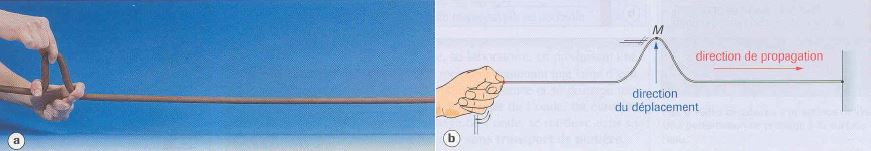
Observation
La perturbation se propage le long de la corde, d’une extrémité à l’autre, sans transport de matière.
Interprétation
-
La perturbation est appelée onde mécanique.
Elle est qualifiée de transversale, car le point M du milieu se déplace perpendiculairement à la corde
avant de retrouver son état d’équilibre.
-
La corde est appelée le milieu de propagation.
Ce milieu est qualifié d’élastique puisqu’il retrouve son état initial après avoir été temporairement déformé.
Ce milieu est qualifié d’unidimensionnel puisque l’onde ne peut se déplacer que dans une seule direction.
2°) Propagation d’une perturbation le long d’un ressort
a) Expérience
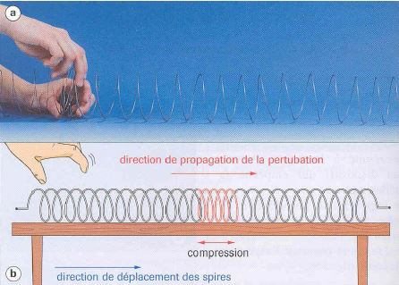
b) Observation
La perturbation se propage le long du ressort, d’une extrémité à l’autre, sans transport de matière.
c) Interprétation
-
Le milieu de propagation est unidimensionnel et élastique.
-
L’onde mécanique est longitudinale, car le point M du milieu se déplace parallèlement à sa direction de
propagation.
3°) Propagation d’une perturbation dans un milieu à deux dimensions
a) Onde à deux dimensions
Expérience
Jetons une pierre dans un étang :
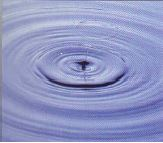
Observation
Une perturbation se propage, à partir du point de chute, sous forme d’une ride circulaire, sans
transport de matière : le front d’onde est circulaire.
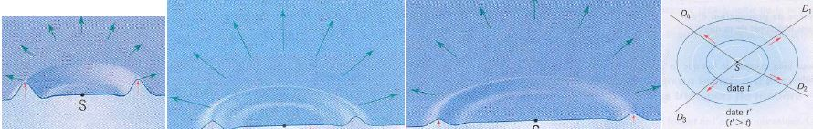
Interprétation
-
Le milieu est qualifié d’élastique puisqu’il retrouve son état initial après avoir été
temporairement déformé.
Le milieu de propagation est bidimensionnel puisque l’ensemble des directions de propagation
possibles forme un plan.
-
L’onde mécanique est transversale, car le point M du milieu se déplace perpendiculairement à sa
direction de propagation.
L’onde mécanique est bidimensionnel puisque l’ensemble des directions de propagation de
l’onde forme un plan.
b) Onde à une dimension
Expérience
Considérons une vague s’approchant d’un rivage :
Observation
La perturbation se propage, sans transport de matière, avec un front d’onde rectiligne.
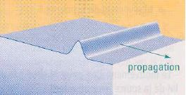
Interprétation
-
Le milieu est qualifié d’élastique puisqu’il retrouve son état initial après avoir été
temporairement déformé.
Le milieu de propagation est bidimensionnel puisque l’ensemble des directions de propagation
possibles forme un plan.
-
L’onde mécanique est transversale, car le point M du milieu se déplace perpendiculairement à sa
direction de propagation.
L’onde mécanique est unidimensionnel puisque l’onde ne se propage que dans une direction.
4°) Propagation d’un son dans un milieu à trois dimensions
Quand un bruit est émis, une perturbation se propage, à partir du point - source S, dans toutes les directions de
l’espace (milieu à trois dimensions), sans transport de matière.
Rq. : Les ondes sonores sont des ondes longitudinales.
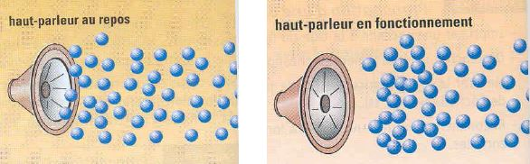
5°) Quelques propriétés
a) Une propriété du milieu de propagation : la célérité
1- Définition
Dans un milieu homogène, la célérité v d’une onde mécanique progressive est définie par : v = d/Δt
Rq. : Le mot « célérité » est utilisé au lieu du mot « vitesse » pour différencier la propagation d’une onde
qui s’effectue sans transport de matière, contrairement au déplacement des objets.
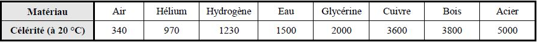
2- Conséquence : notion de retard à l’établissement d’une onde
-
Question :
Considérons une onde mécanique progressive, issue d’un point S, se propageant dans un milieu
unidirectionnel en direction d’un point M1 puis M2. La nature de l’onde en M1 est-elle identique à celle en M2 ?
-
La perturbation au point M1 est de même nature que celle créée au point M2, mais cette
perturbation est observable après un certain retard τ défini par : τ = (M1*M2)/v
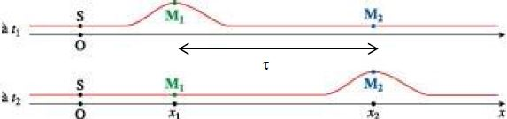
b) Une propriété des ondes : le transport d’énergie
Une onde réalise un transfert d’énergie mécanique sans transport de matière.
Des frottements avec le milieu ambiant peuvent provoquer une
diminution de l’énergie transportée, et donc une diminution de l’amplitude de l’onde.
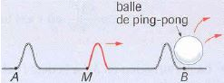
II- Les ondes progressives périodiques
1°) Présentation
Travaillons avec la corde comme milieu de propagation.
Lorsque la corde est attachée au vibreur précédent, la perturbation progresse le long de celle-ci : l’onde est alors
qualifiée de progressive.
Puisque la source vibre périodiquement, l’onde est également périodique.
Si le mouvement du vibreur est sinusoïdal, l’onde est également sinusoïdale.
2°) La double périodicité
a) … du mouvement d’un point de la corde : mise en évidence de la notion de périodicité temporelle
Tous les points de la corde vibrent avec la même fréquence que la source. La période T des oscillations,
appelée alors période temporelle, correspond à la durée au bout de laquelle un point du milieu de propagation se
retrouve dans le même état.
b) … du mouvement de deux points de la corde : mise en évidence de la notion de périodicité spatiale
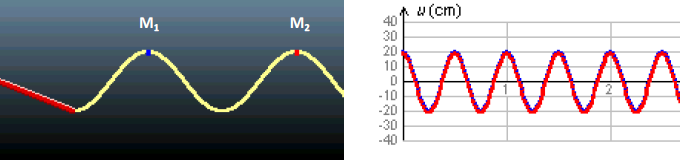
Les points M1 et M2 sont les deux points les plus rapprochés ayant le même mouvement en même temps :
on dit qu’ils vibrent en phase, et la distance les séparant est appelée période spatiale ou longueur d’onde λ.
c) Lien entre période temporelle et période spatiale
Déterminons les deux quotients suivants, pour deux fréquences différentes :
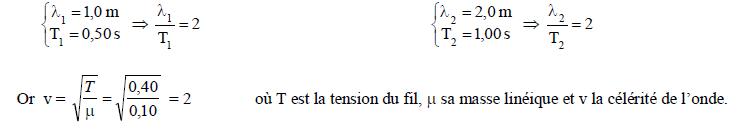
La longueur d’onde λ et la période temporelle T sont donc reliées par :
λ = v*T
où v représente la célérité de l’onde.
Rq. : La longueur d’onde peut aussi être définie comme la distance que parcourt l’onde, se déplaçant à la
célérité v, au cours d’une période d’oscillation.
III- Cas des ondes sonores musicales
1°) Le domaine en fréquences
L’oreille humaine perçoit les ondes mécaniques lorsque leur fréquence est comprise entre 20 Hz et 20 kHz.
Si la fréquence de ces ondes est inférieure à 20 Hz, elles sont qualifiées d’infrasonores.
Si la fréquence de ces ondes est supérieure à 20 kHz, elles sont qualifiées d’ultrasonores.
2°) Des caractéristiques liées à…
a) … la fréquence
1- Son pur ou complexe
-
Un son est qualifié de pur lorsque la pression engendrée par la perturbation varie sinusoïdalement au
cours du temps.
-
Un son est qualifié de complexe lorsque cette pression varie périodiquement au cours du temps, mais de
façon non sinusoïdale.
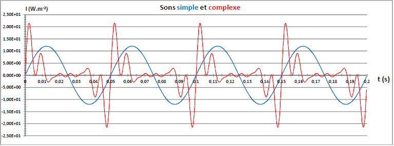
2- Notion de hauteur
Qu’il soit simple ou complexe, le son peut être perçu comme grave ou aiguë.
b) … l’amplitude
1- Notion d’intensité sonore
Notion d’intensité sonore
Une onde transporte de l’énergie.
L’intensité sonore I est liée à la puissance P du transfert énergétique reçu par un élément de surface S du
milieu de propagation de l’onde : I = P / S
Exemple : À 1000 Hz, une oreille commence à entendre un son si l’intensité acoustique est supérieure à
I = 10-12 W.m-2
2- Notion de niveau d’intensité sonore
Présentation
Afin d’utiliser des valeurs plus simples que des puissances de 10 et
d’affecter une valeur nulle au seuil d’audibilité, une nouvelle grandeur physique a été
inventée : le niveau d’intensité acoustique, défini par : L = 10. log (I / I0)
où I0 correspond à une intensité acoustique minimale audible
Par convention : I0 = 10-12 W.m-2
Échelle d’intensité et de niveau d’intensité acoustique
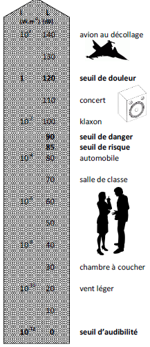
Intensité, niveau d’intensité acoustique et perception auditive
-
Lorsque l’intensité sonore est doublée, le son semble deux fois plus fort. Mais le niveau
d’intensité acoustique n’est pas doublé.
-
Pour deux sons différents d’intensités I1 et I2 telles que I2 = 2.I1 , leur niveau d’intensité
acoustique est défini par : L1 = 10. log (I1 / I0) et L2 = 10. log (I2 / I0)
donc L2 = 10. log (2.I1 / I0)
soit L2 = 10. [log2 + log (I1 / I0)]
soit L2 = 10.log2 + 10. log (I1 / I0)
soit L2 = 3 + L1
-
Conclusion : Lorsque deux sons ont des intensités ayant un rapport égal à 2, les niveaux
d’intensité acoustique ne sont décalés que de 3 dB.
c) … la fréquence et l’amplitude : notion de timbre
-
Le mathématicien Joseph Fourier (1768-1830) a montré qu’un son complexe peut être décomposé en
une somme de signaux sinusoïdaux (appelés harmoniques) aux amplitudes variables, mais dont les
fréquences fn sont un multiple d’une fréquence de base appelée fréquence
fondamentale (ou fréquence du premier harmonique) notée f1.
Nous avons alors : fn = n × f1 où n, un entier non nul est l’ordre de l’harmonique
-
L’ensemble des harmoniques constitue le spectre d’un son.
La perception auditive de l’ensemble de ces harmoniques est appelée le timbre d’un son.
-
Conséquence : Lorsque deux instruments jouent la même note, la perception auditive de cette note est
différente. La fréquence fondamentale est identique mais le nombre d’harmoniques et la
présence et l’absence de certains ordres d’harmonique donnent un timbre différent à la note.
-
Rq. : L’attaque et l’extinction de la note donnent aussi une perception auditive différente à ce son.